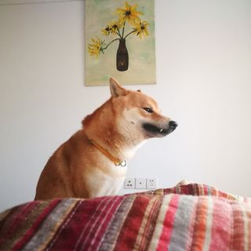

|  | Shijie Wang (王世杰) |
[5] Vamos: Versatile Action Models for Video Understanding
[Link]
[Website]
Shijie Wang, Qi Zhao, Minh Quan Do, Nakul Agarwal, Kwonjoon Lee, and Chen Sun
Under Review
[4] AntGPT: Can Large Language Models Help Long-term Action Anticipation from Videos?
[Link]
[Website]
Qi Zhao*, Shijie Wang*, Ce Zhang, Changcheng Fu, Minh Quan Do, Nakul Agarwal, Kwonjoon Lee, and Chen Sun
ICLR 2024
[3] Object-centric Video Representation for Long-term Action Anticipation
[Link]
Ce Zhang*, Changcheng Fu*, Shijie Wang, Nakul Agarwal, Kwonjoon Lee, Chiho Choi, and Chen Sun
WACV 2024
[2] Goal-Conditioned Predictive Coding as an Implicit Planner for Offline Reinforcement Learning
[Link]
[Website]
Zilai Zeng, Ce Zhang, Shijie Wang, and Chen Sun
NeurIPS 2023
[1] Pose Recognition with Cascade Transformers
[Link]
[Code]
Ke Li*, Shijie Wang*, Xiang Zhang*, Yifan Xu, Weijian Xu, and Zhuowen Tu
CVPR 2021
Conference Reviewer:
Part of the page is generated by jemdoc.
Last Updated: .